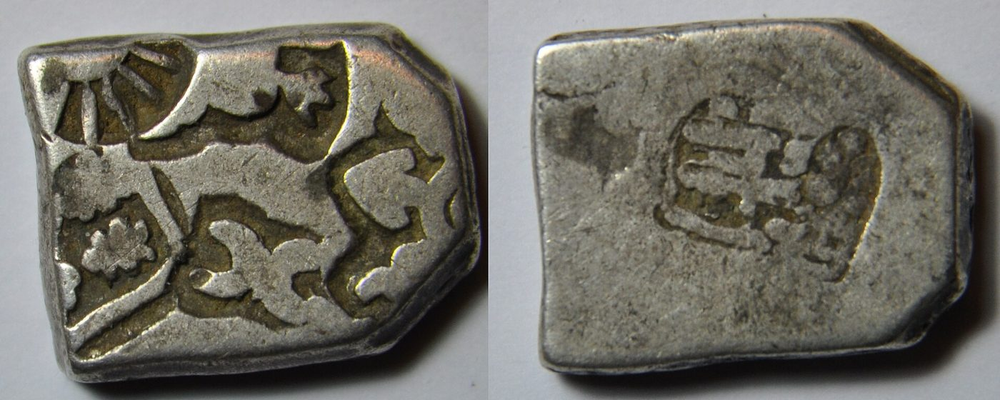
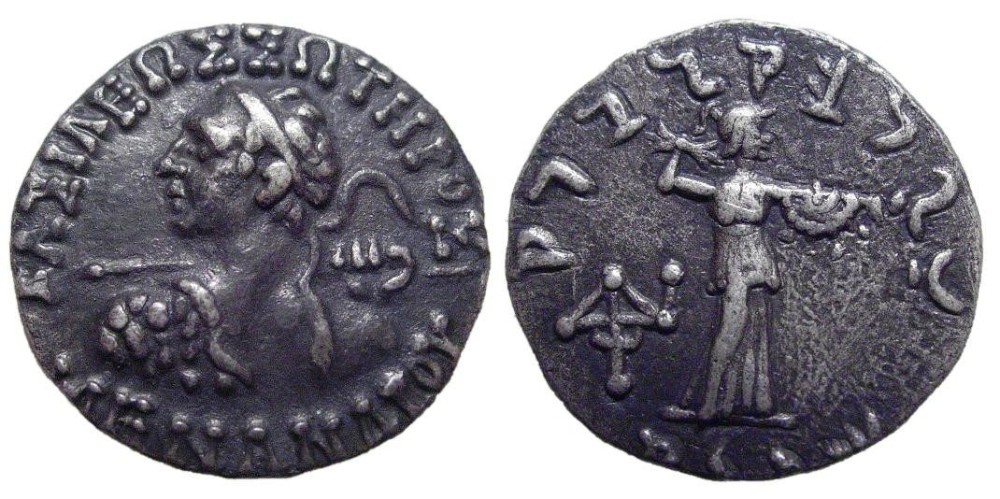
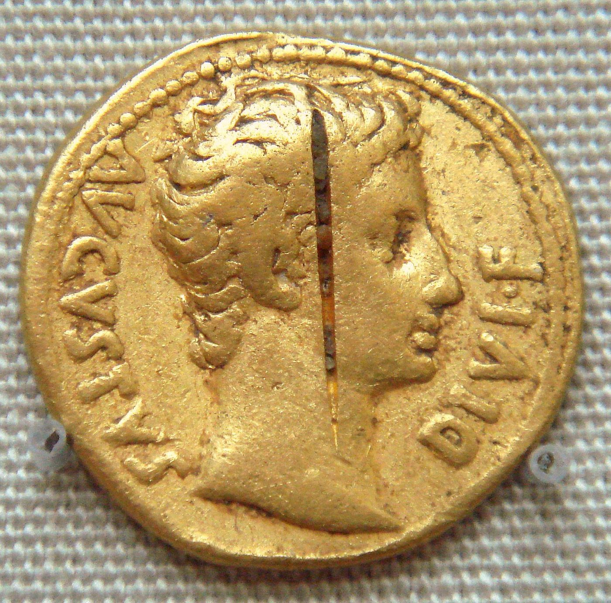
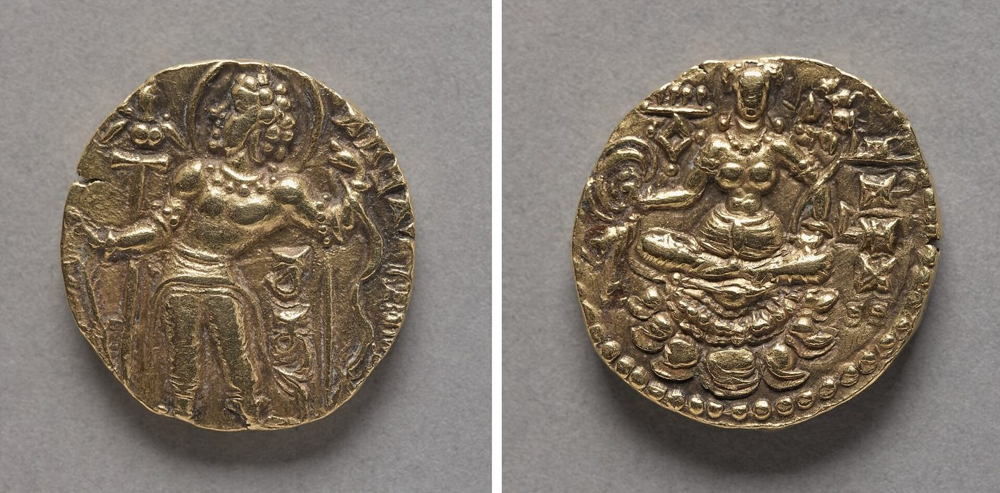
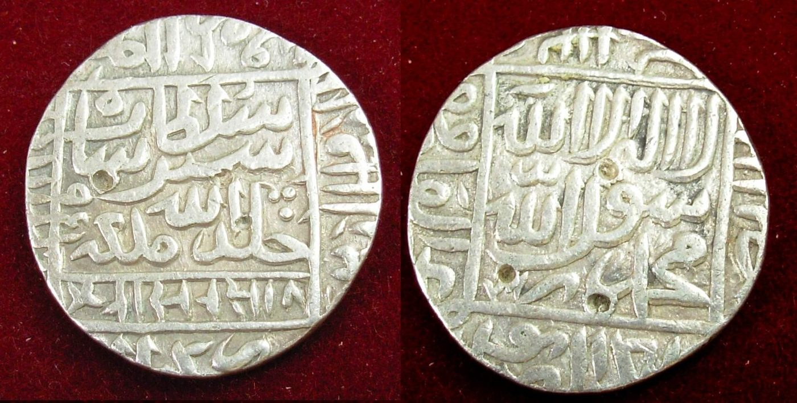

Chapter 5: Coinage and Monetary Systems¶
Chapter Overview
Coined money appears in South Asia in the second half of the first millennium BCE, after a long period in which cattle, ornaments and weighed pieces of metal served as measures of value. This chapter follows the main coin series from the silver punch-marked coins through the bilingual coins of the north-west, Kuṣāṇa and Gupta gold, the lead and potin of the Deccan, the Roman coins found in the south and the gold of the Chola and Vijayanagara kingdoms, to the tanka of the Delhi Sultanate and the rupee of Sher Shāh and the Mughals. It also looks at what the texts, above all the Arthaśāstra, say about mints, coin examiners and the value of money. Many questions remain open: who issued the earliest coins, how monetised the economy was at different times, and whether early medieval India really suffered a “coin shortage”. The chapter sets these out as debates.
Indian monetary history has three kinds of evidence, and each has its limits. The coins themselves survive in their hundreds of thousands, in hoards and in excavated layers, but most early coins carry no legend and no date. Texts such as the Pali canon, Pāṇini’s grammar, the Arthaśāstra and the Manusmṛti name coins and weights, but they are hard to date and are often normative rather than descriptive. Inscriptions record endowments, prices and fines in named currencies, but usually for religious gifts rather than for everyday trade. The account below tries to keep these three kinds of evidence apart. Weights and measures in general are treated in Chapter 7, and credit instruments such as the hundī in Chapter 6.
5.1 Before Coinage: Measures of Value¶
5.1.1 Cattle, Ornaments and Weighed Gold¶
The Harappan cities (mature phase c. 2600–1900 BCE) used a highly standardised system of cubical chert weights, but no coins. Exchange there was presumably by barter, by weighed metal or by other means we cannot now see (Kenoyer 1998). Chapter 7 discusses the Harappan weights.
In the Vedic texts, wealth is counted above all in cattle. The dānastuti (“praise of gifts”) verses of the Ṛgveda (c. 1500–1200 BCE) list the cows, horses and chariots that patrons gave to poets. Among the gifts is the niṣka, a gold ornament worn at the neck. Because it was given and counted, the niṣka worked as a store and measure of value, but there is no evidence that it was a coin. In the later Vedic period (c. 1200–500 BCE), the Brāhmaṇas name the śatamāna (“of a hundred measures”), a gold piece of a hundred kṛṣṇalas (seeds used as weights), as a sacrificial fee. The well-known story of Śunaḥśepa in the Aitareya Brāhmaṇa, in which his father Ajīgarta sells him for sacrifice, puts the price in cattle (a hundred cows). These terms survived. Pāṇini’s grammar (c. 4th century BCE) gives rules for words expressing a price in niṣkas and śatamānas. Pāṇini also teaches a derivative rūpya, “stamped” or “struck”, from rūpa (“form, mark”). Many scholars connect this word with the stamped metal of the early coins, and it is the remote ancestor of “rupee” (Sircar 1968; Kosambi 1981).
5.1.2 The Weight System and the Problem of Names¶
Indian coin standards were built on the rati (Sanskrit raktikā, guñjā or kṛṣṇala), the red-and-black seed of Abrus precatorius. Modern estimates of the rati vary, but it is usually taken to be roughly 0.11–0.12 g. This is an approximation: seeds vary, and ancient standards were reconstructed from coins, not from seeds. The silver coin of the early historic period was nominally 32 ratis, which works out at about 3.5–3.8 g. Most surviving punch-marked coins weigh a little less, commonly around 3.3–3.5 g, partly because of wear.
Scholarly Note: Kārṣāpaṇa, purāṇa, paṇa: a note on terms
Numismatists conventionally call the silver punch-marked coin a kārṣāpaṇa (Pali kahāpaṇa), and this chapter does the same. The texts, however, do not use the names consistently. In the weight table of the Manusmṛti (8.131–137; c. 2nd century CE), the kārṣāpaṇa or paṇa is a copper unit of one karṣa. The silver unit of 32 ratis is called a dharaṇa or purāṇa, and the silver śatamāna is ten dharaṇas (Olivelle 2004). The Arthaśāstra calls its silver coin simply the paṇa. The Pali texts use kahāpaṇa for the ordinary coin of account. When a text names a sum “in kārṣāpaṇas”, the metal and the standard therefore cannot be taken for granted. This chapter does not convert such sums into modern values.
5.1.3 Cowries¶
Cowrie shells (varāṭaka, kapardaka), most of them from the Maldives, served as small change in many parts of India for a very long time. The Chinese pilgrim Faxian, who travelled in the Gangetic plain in the early fifth century CE, reported that people there used cowries in buying and selling. Early medieval inscriptions from eastern India state prices and rents in cowries counted against coin or silver units. In Bengal and Odisha, cowries remained in use for petty payments into the colonial period. Cowries did not stand for a failure of money. They show that the small-change end of the system could be supplied by an imported commodity whose value was set by convention (Deyell 1990).
5.2 The Punch-Marked Coins¶
5.2.1 Technique and Date¶
The earliest Indian coins are the punch-marked coins. A piece of silver was cut to weight from a sheet or bar, and one or more small symbols were then hammered onto it with separate punches. The coins were not struck between a pair of dies, as Greek coins were. Most have no legend. The symbols include the sun, a “six-armed” wheel-like device, animals (elephant, bull, dog, frog, peacock), trees in railings, hills (the “arched hill”), fish and many abstract signs (Allan 1936; Gupta 1969).
The date of the first coins is debated. Firm archaeological anchors are few. The Chaman Hazouri hoard found at Kabul in 1933 contained bent silver bars and Indian punch-marked pieces together with Greek coins, and was deposited in the fourth century BCE. The Bhir Mound hoard at Taxila contained punch-marked coins together with coins of Alexander and of Philip III Arrhidaeus, and was deposited towards the end of the fourth century BCE. Most numismatists therefore place the beginnings of coinage in the north-west and the Gangetic plain in the fifth or fourth century BCE. Some argue for the sixth century BCE, chiefly on the basis of the Pali texts, whose own dates are uncertain, so that a date as early as c. 600 BCE remains a possibility rather than a finding.
5.2.2 Regional Series and the “Imperial” Series¶
Modern catalogues sort the punch-marked coins into regional groups. In the north-west there are heavy concave pieces and “bent bars” of about 11 g. In the Gangetic plain there are groups that numismatists attribute to the mahājanapadas, such as Kosala, Kāśī, Magadha and Avanti, and there are distinctive series from the Deccan and the south. These attributions rest on find-spots and on style, not on legends, and they are not all secure. The bent bars are sometimes linked to the Vedic śatamāna, and sometimes to the Achaemenid Persian silver standard used in the satrapies of Gandhāra and the Indus. Both links are hypotheses.
The most numerous and widely distributed group is the so-called “imperial” series. These are flat silver coins of about 32 ratis, each with a set of five obverse punches, and they are found from Afghanistan to the Deccan. Many numismatists attribute much of this series to the Mauryan state (c. 321–185 BCE). The attribution is plausible because of the coins’ uniformity and range, but no coin names a Mauryan king. The reverse often carries one or more small marks, which seem to have been added while the coins were in circulation (Figure 5.1). Copper punch-marked and cast coins became common only later, in the last centuries BCE (Gupta 1969; Allan 1936).


5.2.3 Kosambi’s Statistical Study¶
The most original work on these coins was done by the mathematician and historian D. D. Kosambi in the 1940s and 1950s. Kosambi weighed several thousand coins from excavated hoards, above all those from Taxila, and studied how their weights were distributed. He showed that coins lose weight at a fairly regular rate in circulation, so that the mean weight of a group of coins can indicate how long it had been in use. He also showed that coins with more reverse marks tend to be lighter. This supported his view that the reverse marks were added during circulation, perhaps by checking authorities, and it allowed him to propose a relative order for the obverse groups. Kosambi’s attributions of particular groups to particular kings have not been generally accepted. His method, which treats coins as a statistical population and not as individual specimens, was a landmark in numismatics (Kosambi 1981).
Debate: Who issued the punch-marked coins?
Older accounts often say that punch-marked coins were “minted by the state”. The evidence does not support that as a general statement. The later “imperial” series may well be a state issue. For the earlier regional coins, scholars have proposed several issuers. Some think they were issued by kings or janapada authorities. Others suggest that urban or merchant bodies, or even individual bankers and money-changers, put their marks on pieces of standard weight. Kosambi himself argued that the marks guaranteed weight and fineness, and he left open how far they were “royal”. Clearer evidence of non-royal issue comes from the following period. Inscribed cast copper coins from Taxila carry the word negama, most often read as referring to a merchant or town corporation. Other cast coins name towns such as Ujjayinī, Vidiśā, Erakaṇa (Eran), Tripurī and Kauśāmbī, apparently as issuing authorities (Allan 1936; Chakravarti 2002). It seems best to suppose that several kinds of authority issued coins in early historic India, and that the share of each changed over time.
Scholarly Note: An independent invention?
The relation of Indian coinage to the coins of Lydia, Greece and Achaemenid Persia is also debated. The Achaemenid empire held Gandhāra and the Indus region from the late sixth century BCE, and its silver siglos was known there. Some numismatists hold that coinage in the north-west began under Achaemenid influence and then spread east. Others stress how different the Indian technique of multiple punches on cut blanks is from die-striking, and argue for a largely local development out of the practice of marking weighed silver. Both positions are held by serious scholars. A middle view is that the idea of coinage may have travelled while the forms were local.
5.3 Cast, Die-Struck and Local Coinages¶
From about the third and second centuries BCE, a great variety of copper (and some silver) coins was issued alongside the punch-marked silver. Some were made by casting in moulds. Others were die-struck, sometimes on one face only. There were three broad kinds of issuer.
-
Cities. Cast and struck copper coins name or are attributed to towns such as Ujjayinī (with the cross-and-balls “Ujjain symbol”), Vidiśā, Eran, Tripurī, Kauśāmbī and Taxila.
-
Local kings. Dynasties at Kauśāmbī, Ayodhyā, Mathurā and Pañcāla issued copper coins with their names in Brāhmī.
-
Republican peoples (gaṇas). The Yaudheyas, Mālavas, Ārjunāyanas, Audumbaras and Kuṇindas issued coins in the name of the people itself. A well-known example is the Yaudheya coin legend yaudheya-gaṇasya jaya (“victory to the Yaudheya gaṇa”). The Kuṇinda king Amoghabhūti issued silver with both Brāhmī and Kharoṣṭhī legends (Allan 1936; Sircar 1968).
This copper coinage matters for economic history. It shows that coins were used for small, everyday transactions in many towns, and not only for large payments in silver.
5.4 The North-West: Indo-Greek, Śaka and Kuṣāṇa Coinage¶
5.4.1 Indo-Greek Bilingual Coins¶
The Greek kings who ruled parts of Afghanistan, Gandhāra and the Panjab from the early second century BCE to around the turn of the era brought the Hellenistic die-struck coin, with a royal portrait and a deity. In India they adapted it in three ways. First, they added a second legend, usually in Prakrit written in Kharoṣṭhī, on the reverse, so that the coins became bilingual. Second, they struck square as well as round coins. Third, they struck silver on a lighter “Indian” standard: a drachm of about 2.4 g and a tetradrachm of about 9.7 g, against roughly 4.3 g and 17 g on the Attic standard used in Bactria. Some early issues went further. Square silver coins of Agathocles found at Ai Khanoum carry a Brāhmī legend and figures usually identified as Saṅkarṣaṇa-Balarāma and Vāsudeva-Kṛṣṇa. Menander (c. 165/155–130 BCE), remembered in the Pali Milindapañha as King Milinda, issued a very large bilingual coinage in silver and bronze (Bopearachchi 1991); one of his drachms is shown in Figure 5.2(a). The Indo-Scythian (Śaka) and Indo-Parthian rulers who followed in the first century BCE and first century CE kept the bilingual format, which helps to reconstruct their sequence of rulers.
5.4.2 Kuṣāṇa Gold and Copper¶
The Kuṣāṇas took the north-west and much of the Gangetic plain in the first and second centuries CE, and they changed the monetary system. Kujula Kadphises issued mainly copper. His successor, Wima Kadphises, introduced a regular gold coinage of about 8 g together with a large copper coinage. Under Kaniṣka I (accession now usually placed c. 127 CE) the legends were changed from Greek to Bactrian, written in Greek script. The reverses carry a remarkable range of deities: Iranian (Mao, Miiro, Athsho, Nana), Greek-derived, and Indian, including Oesho (usually identified with Śiva) and, rarely, the Buddha (Boddo) (Gupta 1969). A gold coin of Kaniṣka is shown in Figure 5.2(b).
The weight of Kuṣāṇa gold is close to that of the Roman aureus, and Roman gold reached the Kuṣāṇa world through trade. Some scholars think Roman coins were melted down and restruck. Others think the closeness of weight reflects a common bullion standard. The question is not settled. The Latin denarius gave Indian languages the word dīnāra, which Gupta inscriptions later use for gold coins. Kuṣāṇa copper was issued in great quantity, and it is found in excavations across north India. That suggests coin use deep into urban society (Gupta 1969).


5.4.3 The Western Kṣatrapas: Dated Silver¶
In Gujarat, Saurashtra and Malwa, the Śaka Western Kṣatrapas (c. 1st–4th centuries CE) issued small silver drachms. The obverse carries the ruler’s bust and a degenerate Greek legend. The reverse shows a three-arched hill with a crescent and a Brāhmī legend naming both the ruler and his father. From the later second century CE many of these coins also carry a date behind the head, in the Śaka era (beginning 78 CE). The Western Kṣatrapa series is therefore one of the few ancient Indian coinages from which a dynasty’s succession can be reconstructed year by year. After the Gupta conquest of the region under Candragupta II (c. 400 CE), the Guptas issued silver coins of the same general type for western India (Gupta 1969; Sircar 1968).
5.5 The Deccan and the Far South in the Early Historic Period¶
5.5.1 Sātavāhana Lead, Potin and Silver¶
The Sātavāhanas, who ruled in the Deccan from about the first century BCE to the early third century CE, issued coins mostly in lead, potin (a copper alloy rich in lead and tin) and copper. Lead was an unusual choice for coinage, and it gives the Sātavāhana series its particular character. The common types show an elephant, a lion, a horse or a ship (the ship coins are discussed in Chapter 13), with the “Ujjain symbol” on the reverse. A few later kings, such as Vāsiṣṭhīputra Śātakarṇi, issued silver coins with royal portraits. These carry a Prakrit legend on one side and a legend in a Dravidian language, in a Tamil-Brāhmī-type script, on the other. The conflict with the Western Kṣatrapas left its mark on the coins. A hoard of more than thirteen thousand silver coins of Nahapāna found at Jogalthembi near Nashik contained many coins restruck by Gautamīputra Sātakarṇi (Ray 1986; Sircar 1968).
5.5.2 Coins of the Tamil Chiefdoms¶
In the far south, copper and some silver coins bear the emblems of the three Tamil royal lineages: the fish of the Pāṇḍyas, the bow of the Cēras and the tiger of the Cholas. A few carry names in Tamil-Brāhmī. Most can be dated only broadly, to the early centuries CE, and their attribution is debated. Early Tamil poetry and Tamil-Brāhmī inscriptions mention gold (poṉ) and the kāṇam and kāśu as money terms. These terms do not show how far everyday exchange was monetised (Mahadevan 2003; Champakalakshmi 1996).
5.5.3 Roman Coins in South India¶
Roman gold and silver coins have been found in large numbers in peninsular India, especially in Tamil Nadu, Kerala, Karnataka and Andhra, both in hoards and as single finds. Most of the silver is denarii of Augustus and Tiberius. Gold aurei run from the Julio-Claudian emperors into the second century CE. Many coins bear a deliberate cut or gash across the emperor’s portrait (Figure 5.3). This has been read in two ways. It may have cancelled the coins as Roman currency, or it may have been a test of the metal. The hoards appear to have been valued by weight and fineness, not by the face value of Roman money. Most scholars therefore think the coins circulated mainly as bullion, or were hoarded as wealth, and were not used as everyday currency (Tomber 2008; Begley and De Puma 1991).


Pliny the Elder’s complaint that India drained the empire of fifty million sesterces a year confirms that money flowed eastwards, though his figures are a moralist’s round numbers, not accounts (Section 11.7). Late Roman bronze coins of the fourth and fifth centuries, and local imitations of them, are found in Sri Lanka and in the far south of India. Chapter 11 discusses the Indo-Roman trade itself.
5.6 Gupta Gold and Silver¶
The Gupta kings (c. 320–550 CE) issued mainly gold coins, which their inscriptions call dīnāra or suvarṇa. The early issues follow the Kuṣāṇa weight of about 7.5–8 g. Under Skandagupta (c. 455–467 CE) a heavier coin of about 9.2 g appears, often interpreted as a return to a suvarṇa standard of 80 ratis (Gupta 1969). Numismatists classify the coins by the scene on the obverse. The reverse usually shows a goddess, generally identified as Lakṣmī. The principal types are:
-
the king-and-queen type, naming Candragupta I and the Licchavi princess Kumāradevī;
-
under Samudragupta, the standard (king at an altar), archer, battle-axe, tiger-slayer, lyrist (the king playing the vīṇā) and aśvamedha types. The aśvamedha coins show the sacrificial horse before a sacrificial post, and they announce the performance of the Vedic horse sacrifice;
-
under Candragupta II, the archer (Figure 5.4), lion-slayer, horseman and chhatra (parasol) types;
-
under Kumāragupta I, a wide range including the horseman, peacock (with Kārttikeya on the reverse), elephant-rider, rhinoceros-slayer and a second aśvamedha type.
The legends are in Sanskrit, and several are composed in verse. They praise the king as unconquered and as a conqueror of a hundred battles who wins heaven. These are some of the earliest examples of Sanskrit political poetry addressed to a wide public, and the iconography links royal power with martial skill, learning and Vedic ritual (Gupta 1969). Large hoards show how much gold there was. The Bayana hoard of 1946 (Rajasthan) contained about 1,800 Gupta gold coins.


The later Gupta coinage shows marked debasement. The coins of the late fifth and sixth centuries contain visibly less gold, and some late issues are of pale, alloyed metal. Metallurgical analyses of individual coins confirm the general trend, though precise percentages for the whole series should be treated with caution. In western India the Guptas issued silver coins of Western Kṣatrapa type after about 400 CE, and silver coins with Garuḍa or a peacock also circulated in the Gangetic plain. Gupta copper is comparatively scarce. This fact has been used in arguments about how far coins reached everyday transactions under the Guptas (Gupta 1969). Table 5.1 summarises the main coin series of the early historic period.
| Series | Date (approx.) | Metal | Remarks |
|---|---|---|---|
| Punch-marked (regional and “imperial”) | c. 5th/4th–2nd c. BCE | Silver; later copper | Nominal 32 ratis; surviving coins commonly c. 3.3–3.5 g; issuers debated |
| City, local and gaṇa coins | c. 3rd c. BCE–4th c. CE | Copper, some silver | Cast and die-struck; legends in Brāhmī or Kharoṣṭhī |
| Indo-Greek | c. 2nd–1st c. BCE | Silver, bronze | Bilingual Greek/Kharoṣṭhī; “Indian” drachm c. 2.4 g |
| Kuṣāṇa | c. 1st–3rd c. CE | Gold, copper | Gold c. 8 g from Wima Kadphises; Bactrian legends from Kaniṣka |
| Western Kṣatrapa | c. 1st–4th c. CE | Silver | Small drachms, many dated in the Śaka era |
| Sātavāhana | c. 1st c. BCE–3rd c. CE | Lead, potin, copper; some silver | Silver portrait coins with Prakrit and Dravidian legends |
| Gupta | c. 320–550 CE | Gold; silver in the west | c. 7.5–8 g, heavier c. 9.2 g under Skandagupta; later debasement |
5.7 The Early Medieval “Coin Shortage” Debate¶
Between about 600 and 1000 CE, much of northern India has yielded far fewer coins than the preceding centuries, and many inscriptions record grants and payments in kind. R. S. Sharma took this paucity of coins as one sign of a wider decline in trade and towns. In his view this decline accompanied the growth of land grants and of what he called Indian feudalism (Sharma 1987).
Debate: Was there an early medieval coin shortage?
Sharma argued that, from the late Gupta period onward, a scarcity of coins in excavations and a shift to payment in land and kind show de-urbanisation and a contraction of commerce (Sharma 1987). Critics have replied on several grounds. John S. Deyell’s study of north Indian coinage, Living without Silver, showed that coins did not disappear. A range of currencies continued in use. In the north-west and Rajasthan there were the Indo-Sasanian silver and billon coins and the later “Gadhaiya” pieces. There were the drammas named in inscriptions (the word derives ultimately from the Greek drachm). The Pratihāra king Bhoja I issued his “Ādivarāha” drammas. The Hindu Śāhis of Kabul and Gandhāra issued bull-and-horseman coins, which were widely copied. In the east, cowries were used. What changed, Deyell argued, was the supply of silver: the system adapted by debasing coins, using billon and relying on cowries for small change, not by giving up money (Deyell 1990). B. D. Chattopadhyaya and others have also pointed to new regional markets, temple centres and trading networks in this period (Chattopadhyaya 1994). The debate has become a question about regional variation and about the forms money took. Most scholars no longer accept a simple story of uniform decline.
In the eleventh and twelfth centuries, the Gāhaḍavālas of Kanauj and some of their neighbours issued gold coins with a seated goddess and the king’s name in Nāgarī (Gopal 1965).
5.8 Gold in the South: From the Cholas to Vijayanagara¶
In peninsular India, Tamil and Kannada inscriptions of the ninth to thirteenth centuries record endowments, interest and prices in gold units. The most common are the kaḻañcu (a gold weight, used also for coins), the smaller mañjāḍi, and the kāśu. In the Deccan, inscriptions use the gadyāṇa and the paṇa. The relations between these units changed over time, and the identification of named units with surviving coins is often uncertain. The Kadambas of Goa and the Western Cāḷukyas issued small cup-shaped gold coins, known from inscriptions as padmaṭaṅkas from the lotus punched on them. The Cholas issued gold, silver and very many copper coins. The Chola copper coins of the “Rājarāja” type show a standing and a seated figure and the legend śrī rājarāja in Nāgarī. They are found widely in south India and Sri Lanka, and they were imitated in Sri Lanka (Nilakanta Sastri 1955b; Hall 1980). Tamil merchant guilds used these currencies in the trade of the Chola period (Chapter 4).
The Vijayanagara kingdom (c. 1336–1565, with successor states after that) established the gold varāha of about 3.4 g as the dominant coin of the south. Its name comes from the boar emblem of earlier dynasties, though Vijayanagara coins mostly show deities such as Hanumān, Gaṇḍabheruṇḍa, Śiva and Pārvatī, Bālakṛṣṇa or Veṅkaṭeśvara. Persian writers called it the hun, and the Portuguese and other Europeans called it the pagoda. Smaller gold paṇam (European “fanam”) and copper kāśu (“cash”) served lesser payments. The European companies kept their south Indian accounts in pagodas, and the English Company minted its own pagodas at Madras. The southern gold standard thus outlived Vijayanagara by more than two centuries (Subrahmanyam 1990; Nilakanta Sastri 1955a).
5.9 Sultanate and Mughal Currency¶
5.9.1 The Tanka and the Jital¶
The Ghurid conquerors of north India at first adopted local coin types. Muʿizz al-Dīn Muḥammad bin Sām struck gold coins at Kanauj of Gāhaḍavāla type, with the seated goddess and his own name in Nāgarī. Billon “bull-and-horseman” coins of the Śāhi type also continued, with Nāgarī legends such as śrī hamīra (from Arabic amīr). Under Iltutmish (r. 1211–1236), the Delhi Sultanate established a new pair of coins. The first was the silver tanka of about 11 g, carrying only Arabic legends. The second was the billon or copper jital, a small coin of which several dozen went to the tanka; the reckonings of 48 or 50 jitals found in different sources need care. Gold tankas were also struck. The tanka–jital system served the Sultanate for two centuries and was copied by the regional sultanates of Bengal, Gujarat, Malwa and the Deccan (Raychaudhuri and Habib 1982).
The most famous monetary episode of the Sultanate is the token currency of Muḥammad bin Tughluq (c. 1329–1332). He ordered brass or copper tokens to pass at the value of silver tankas. According to the chronicler Ḍiyāʾ al-Dīn Baranī, the tokens were forged on a large scale, and the sultan finally redeemed them from the treasury. Historians have explained the experiment in different ways: as a response to a silver shortage, as an attempt to finance campaigns, or as an imitation of Chinese and Mongol paper money. Baranī’s hostile account shapes what we know of it.
5.9.2 A Mint Official’s Handbook: The Dravyaparīkṣā¶
The most technical Indian text on the coinage of this period was written by a man who worked in the Sultanate’s mint. Ṭhakkura Pheru, a Jain official who served in the treasury and mint at Delhi under ʿAlāʾ al-Dīn Khaljī and his successors, wrote a series of short Prakrit works on technical subjects, among them gems, metals, arithmetic and architecture. His Dravyaparīkṣā (“examination of coin”), completed around 1318, lists the coins current in north India in his time, the issues of earlier Indian dynasties as well as those of the sultans, and gives for each its weight and its content of silver and copper; it also describes how a mint refined and tested metal. John Deyell made the work a cornerstone of his study of north Indian money, because it allows the debasement of the billon coinage of the preceding centuries to be followed in a contemporary assay rather than only in modern analyses (Deyell 1990). The Dravyaparīkṣā shows that the expertise in assay that the Arthaśāstra had assigned to its examiner of coin (Section 5.10) was a living professional knowledge, and that in the Sultanate it was held by Jain and Hindu specialists working for a Muslim court.
5.9.3 The Rupee, the Dam and the Mohur¶
Sher Shāh Sūr (r. 1540–1545) gave north India the coin that has lasted longest. This was the silver rupiya of about 178 grains (c. 11.5 g), struck in fine silver and paired with a heavy copper dām. Akbar (r. 1556–1605) and his successors kept the rupee standard and added the gold mohur of about 11 g (Figure 5.5). The Āʾīn-i Akbarī of Abū al-Faḍl describes the imperial mints and gives the rate of 40 dāms to the rupee, which was used in revenue accounting. The Mughals ran a system of what is sometimes called “free coinage”. Anyone could bring bullion to an imperial mint and have it struck into coin on payment of a charge. Older rupees passed at a discount (baṭṭā) against new ones, and money-changers (sarrāfs) made their living from these differences (Chapter 6). India produced little silver, so the rupee depended on imports. In the sixteenth and seventeenth centuries, very large quantities of silver arrived. Much of it was New World silver brought by European traders, and some came overland and from Persia and Japan. Irfan Habib and others have linked these imports to a rise in prices and to a growing monetisation of the land revenue. The extent and timing of a Mughal “price revolution” remain debated (Habib 1999; Raychaudhuri and Habib 1982; Richards 1993; Moosvi 1987).


The Mughal rupee became the model for the coins of the successor states and of the East India Company. The Company’s uniform rupee of 1835, of 180 grains, continued the Mughal standard in all but name. Chapter 19 takes up the colonial monetary system.
5.10 The State Mint in the Arthaśāstra¶
The fullest ancient Indian text on the making and control of coin is in Book 2 of the Arthaśāstra, a composite and normative text (Chapter 2). It describes how its authors thought a well-run kingdom should manage money. It is not an account of the Mauryan mint, and no surviving coin series has been shown to follow its rules exactly.
5.10.1 The Lakṣaṇādhyakṣa and the Rūpadarśaka¶
In Arthaśāstra 2.12, two officers are responsible for coinage. The lakṣaṇādhyakṣa, the “superintendent of marks” (often translated as “master of the mint”), is to have silver coins made of silver with one quarter copper and a small proportion (a māṣa) of one of the hard metals. The denominations are the paṇa, half-paṇa, quarter and eighth. Copper coins, likewise alloyed, come in the māṣaka, half-māṣaka, kākaṇī and half-kākaṇī. The rūpadarśaka, the “examiner of coin”, is to establish which coins are current for trade and which are acceptable at the treasury. The same passage lists charges on coin: a rūpika of eight per cent, a vyājī of five per cent and an examination fee of one-eighth paṇa. It also sets a fine for anyone else who makes, sells, buys or tests coin. The exact meaning of these charges is uncertain. Kangle and Olivelle discuss them, and they may refer to a premium on coin paid into the treasury, a mint charge and a testing fee (Kangle 1960; Olivelle 2013). The text does not divide these charges further.
Other chapters of Book 2 deal with the same field. They describe the goldsmith’s workshop (akṣaśālā) under the superintendent of gold (2.13). They describe the state goldsmith (sauvarṇika), who works precious metals for townspeople under controls against fraud (2.14). They also describe the testing of gold on the touchstone and the purification and alloying of gold and silver. In Book 4, makers of false coin (kūṭarūpakāraka) are among the “thorns” that secret agents are to detect and punish (Olivelle 2013; Kangle 1960). Weights and the superintendent of weights (pautavādhyakṣa, AŚ 2.19) are treated in Chapter 7.
Note: What the Arthaśāstra rules imply
Read carefully, the rules show a state that wanted coins of fixed alloy and denomination. It wanted coin tested before the treasury accepted it, and it wanted fees for doing so. They do not show a monopoly of coinage in practice. The many non-royal issues of the period, the money-changers of the Pali texts and the city and gaṇa coins all suggest a more plural reality. Nor do they describe anything like a modern central bank: the concern is with the quality of coin and the treasury’s revenue, not with the quantity of money.
5.11 Money in the Texts¶
Indian thinkers did not write a separate treatise on money. What they thought about it must be gathered from works on statecraft, law and religion. For the Arthaśāstra, the treasury (kośa) is one of the seven constituents (prakṛti) of the state, and the text states plainly that “all undertakings depend on the treasury” (kośapūrvāḥ sarvārambhāḥ, AŚ 2.8.1). Money matters to the Arthaśāstra because it pays for soldiers, officials, works and gifts (Olivelle 2013).
The Dharmaśāstras treat money in the context of law. They set weights and fines (Manu 8.131–137 and the fines that follow), regulate debt and interest, and require the king to fix prices. They rate interest by varṇa and by security, which Chapter 6 discusses (Olivelle 2004; Kane 1930). Buddhist and Jain texts take a moral view of wealth. They also show how ordinary coin had become. The Pali Vinaya sets the threshold of serious theft for a monk at goods worth a pāda, a quarter of a kahāpaṇa (five māsakas), and the Jātaka stories reckon prices, wages and debts in kahāpaṇas as a matter of course (Chakravarti 2002). The texts know that debased and full-weight coins circulate together, and that copper coin depends on official acceptance, but they do not generalise these observations into a theory of money.
The most important monetary institutions of later centuries were not those of the state. They were those of the money-changers and bankers (śreṣṭhin, sarrāf, mahājan). These men tested and exchanged coin, kept deposits and drew hundīs on one another across the subcontinent. Their history belongs to Chapter 6.
Further Reading¶
For the early coins, Allan (1936) remains the standard catalogue, and Gupta (1969) is a concise survey of the whole of Indian coinage. Kosambi (1981) collects Kosambi’s numismatic papers. Bopearachchi (1991) is the reference work for the Indo-Greek series. On the early medieval debate, read Sharma (1987) against Deyell (1990). For the Mughal currency and the silver question, see Habib (1999) and the chapters in Raychaudhuri and Habib (1982). Tomber (2008) and Begley and De Puma (1991) discuss the Roman coins in their archaeological context.